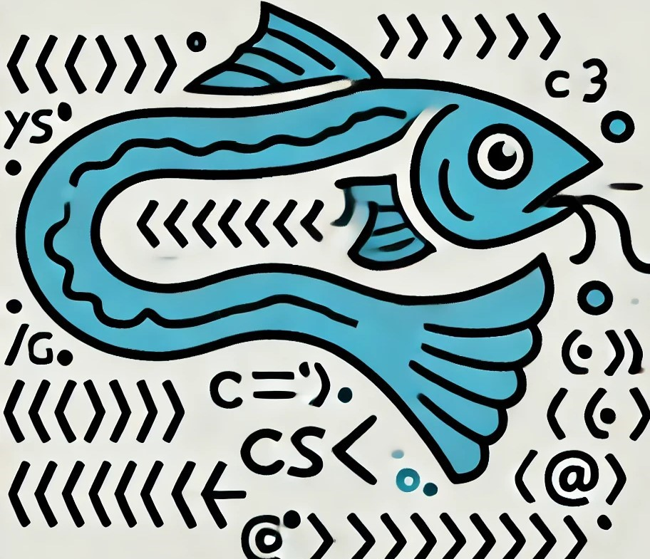

Homepage

Aqua language, developed for the Computational Logic course, is a language that simulates the natural world through code. To program in this language, it is necessary to create sets of rivers and fish and define the relationships between them. The language consists of two types of declarations: river declarations and fish declarations.
If you want to start using and compiling codes on aqua, you can check the Getting Started page and also go to my GitHub repository to get the source code.
About the language
Motivations
- This language was designed to require thinking about the growth curve of populations and river flows.
- To implement loops and conditionals, it is necessary to consider how populations interact and sometimes exponential growth curves.
Language EBNF
EBNF
BLOCK = { STATEMENT };
STATEMENT = ( "λ" | SPAWN | DISCOVER | SUSTAIN | EVENT | RAIN | DRY | EXTINCTION | OPERATION ), "\n" ;
SPAWN = TYPE, IDENTIFIER, "create", ( "λ" | NUMBER | NUMBER, ",", NUMBER ) ;
DISCOVER = "discover", "(", IDENTIFIER, ")" ;
SUSTAIN = IDENTIFIER, "sustains", IDENTIFIER, "\n", "λ", { ( STATEMENT ), "λ" }, "pass_time" ;
EVENT = "event", IDENTIFIER, COMPARISSON, IDENTIFIER, "\n", "λ", { ( STATEMENT ), "λ" }, "conclude" ;
RAIN = "rain","(", IDENTIFIER, ")" ;
DRY = "dry","(", IDENTIFIER, ")" ;
EXTINCTION = "extinguish", IDENTIFIER ;
OPERATION = IDENTIFIER, OP_T, NUMBER, ( "λ" | OP_T, IDENTIFIER ) ;
IDENTIFIER = LETTER, { LETTER | DIGIT | "_" } ;
NUMBER = DIGIT, { DIGIT } ;
LETTER = ( "a" | "..." | "z" | "A" | "..." | "Z" ) ;
DIGIT = ( "1" | "2" | "3" | "4" | "5" | "6" | "7" | "8" | "9" | "0" );
TYPE = ( "river" | "fish" ) ;
OP_T = ( "branch" | "acumulate" | ">>" | "->" ) ;
Language sintatic diagram
Characteristics
- There are 2 types of variables: Rivers and Fish.
- Variables do not support negative values.
- It is possible to work with rational numbers if desired, but most operations only handle integers.
- River variables store the flow, and fish variables store the population and the amount each unit consumes per cycle (tuple).
-
Once created, rivers and fish exist until they become extinct, and until then, they cannot be redeclared.
-
Loops represented by "sustains" work as follows:
Where:- X is a fish or a river
- Y is a fish
Loop Calculation:
Y[0] is the population or flow, and Y[1] is the consumption per unit
Loop while 𝑋[0] > 0
At the beginning of each iteration:
𝑑𝑖𝑓 = 𝑋[0] − 𝑌[0] × 𝑌[1]
𝑠𝑢𝑏 = 𝑑𝑖𝑓 if 𝑑𝑖𝑓 > 0, otherwise 𝑠𝑢𝑏 = 0
𝑌[0] = 𝑌[0] + (𝑌[0] − 𝑌[0] % 2) + 𝑠𝑢𝑏
𝑋[0] = 𝑋[0] − (𝑌[0] × Y[1])
Explaining the Loop
- The loop is designed to simulate the fact that one population serves as food for another, and therefore one must consume the other to grow.
- If there isn't enough food, the loop ends, and the predator population doesn't fully grow if it hasn't fed its entire population (function of sub).
- Every time a population grows, only pairs are considered, as fish do not reproduce alone (hence the subtraction by pop % 2).
Comented example
Example
river x create 10 -- creates a river with 10 units of water
river y create 10
x >> 5 >> y -- River x transfers 5 units of water to river y
discover(x) -- prints 5
discover(y) -- prints 15
x branch 5 -- River x splits into 5 rivers
discover(x) -- prints 1
y >> 1 >> x -- River y transfers 1 unit of water to river x
x accumulate 5 -- x = x * 5 (river x accumulates 5 times the amount of water it has)
fish z create 2,1 -- creates a population of 2 that consumes 1 per individual
fish f create 1,1 -- creates a population of 1 that consumes 1 per individual
x sustains z: -- while x sustains z
-- to sustain z, x must be greater than 0, and z consumes (reduces the value of) x by the amount of its (z_consumption * z_population) and increases its number by (z_population = z_population + (z_population - z_population % 2) + sub)
-- sub = dif if dif > 0 else 0
-- dif = x_population - z_population * z_consumption
y >> 1 >> x:
f -> z -- f consumes z to increase its number in the same way as sustains
event z inf f -- if the population of z is less than f, an event is triggered
extinguish f -- f is extinguished (delete f)
conclude -- end of event
pass_time -- time passes (the loop restarts)
rain(y) -- all rivers receive a water value equivalent to the amount in y
dry(x) -- all rivers lose a water value equivalent to the amount in x